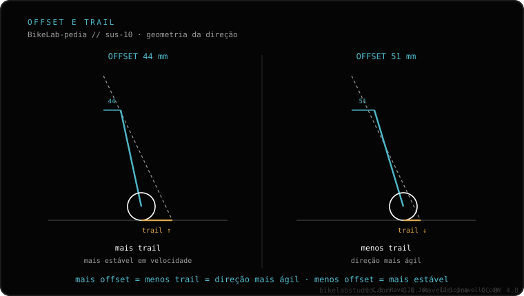

O offset (também chamado rake) é o deslocamento do eixo da roda em relação ao pivô de direção. Afeta o trail, a medida que decide quão estável é a direção. Um offset menor (44 mm) = mais trail = mais estável; um offset maior (51 mm) = menos trail = mais ágil. Não muda a suspensão nem o curso: é um dado de geometria do garfo. Para escolher entre os dois valores típicos, veja offset 44 vs 51.
O offset é um daqueles números que vêm na ficha do garfo e quase ninguém olha, mas que muda por completo como a direção da sua bike se sente.
Imagine a linha do pivô de direção prolongada até o chão. O eixo da roda não está sobre essa linha: está adiantado uns milímetros. Essa distância é o offset. No mundo do MTB usa-se indistintamente o termo inglês rake: significam a mesma coisa. É uma medida fixa do garfo, não um ajuste que você possa mexer.
Importante: o offset não tem nada a ver com a suspensão em si. Não muda o curso, nem o rebote, nem a compressão. Só muda a geometria da direção.
O número que você de fato sente ao pilotar é o trail: a distância, no chão, entre onde aponta a linha de direção e onde toca o pneu. O trail é o que faz a direção querer "autocentrar" e voltar ao reto. Mais trail = mais estabilidade; menos trail = mais rapidez de giro.
O offset é uma das duas alavancas que fixam o trail (a outra é o ângulo de direção). E aqui está a parte contraintuitiva: menos offset dá MAIS trail.

Os dois valores que você mais vai encontrar em garfos de 29" são 44 mm e 51 mm:
Offset 44 mm. Gera mais trail. A direção se sente mais plantada e estável, sobretudo em velocidade e em descidas comprometidas. Em troca, é um pouco mais preguiçosa para girar em curvas muito fechadas. É a tendência moderna em bikes trail e enduro.
Offset 51 mm. Gera menos trail. A direção é mais ágil e rápida de meter na curva, agradável em terreno lento e sinuoso. Em troca, pode se sentir um pouco mais nervosa em alta velocidade. Foi o padrão durante anos em 29".
Diga seu quadro, o tamanho de roda e como você roda (rápido e aberto, ou lento e sinuoso) e recomendamos o offset. Fale com a gente no WhatsApp
O deslocamento do eixo da roda em relação ao pivô de direção. Offset e rake são a mesma coisa. Define, junto com o ângulo de direção, o trail.
44 mm dá mais trail e mais estabilidade em velocidade; 51 mm dá menos trail e mais agilidade em curvas fechadas.
Não. Não mexe no curso nem na amortecimento. Só afeta a geometria da direção por meio do trail.
© 2026 BikeLab Studio. Conteúdo sob CC BY 4.0: você pode copiar, traduzir e publicar, inclusive com fins comerciais. A citação é obrigatória. Sem atribuição, a licença é revogada automaticamente (CC BY 4.0, §6.a) e o uso passa a ser violação de direitos autorais: solicitamos a retirada do conteúdo e sua desindexação. · Design e propriedade: Carlos Ravello Joo